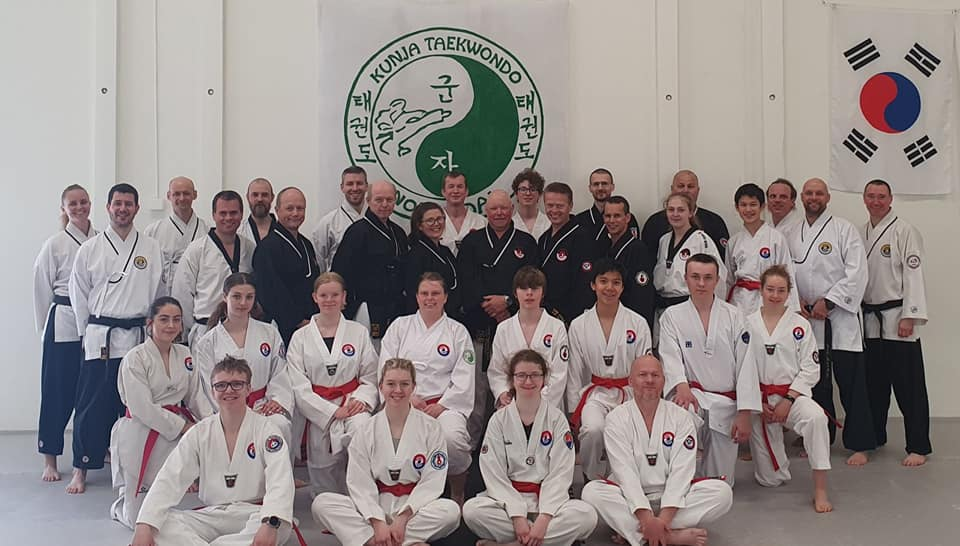

Innlegg
Takk for et fint dan-seminar hos Kunja Taekwondo

Helga fra 3-5. juni arrangerte Kunja Taekwondo, samme klubb som arrangerer sommerleir, Dan-seminar for 4. cup og oppover. Der ble pensum for Dan-gradering gjennomgått, og det var mulighet for å gjennomføre både fysisk test og teoritest.
Det var Patrick Myhren (6. dan), Ingrid Bogsrud (4. dan) og Marius Bergseteren (4. dan) som var instruktører denne helgen.
Lørdagen startet med grunnteknikk, der vi deretter hadde flere treninger både inne og ute utover dagen med fokus på:
- Kombinasjonsteknikker
- Forsvar mot slag
- 8-stegs kamp
- Anja Kyorugi
- Hånd- og fotteknikk
- Mechigi
- 2. step
- Ho sin sul
- Knekking av planker
- TTU- og Taegeuk poomse
- Frikamp
Som du ser, gjennomgikk instruktørene masse forskjellig som er nyttig til dan-gradering.
Fra klubben var det hele 7 personer som møtte opp, både rød- og svart-belter.
Det var veldig lærerikt, så bli gjerne med neste gang!